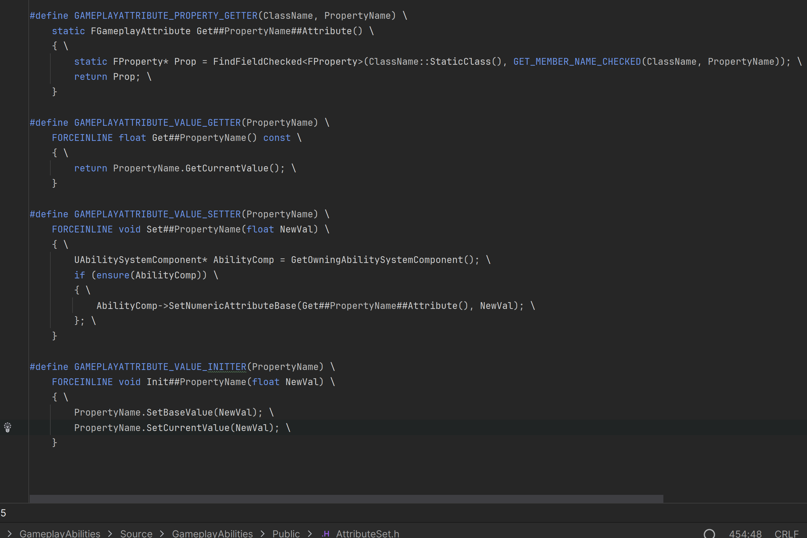
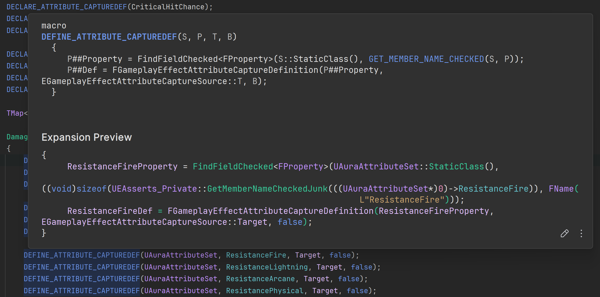

My Understanding of GAS
GAS 就是Gameplay Ability System，但Gameplay是个很难翻译的单词， 它在这里更多表示的是： 在程序里的游戏逻辑，设定，机制等。 很多人翻译成“玩法”，但玩法在中文里的意思是偏向游戏内容而不是游戏制作过程。
中文是一个上下文强关联的语言，“游戏”本身 就不只是“Game”的意思，所以 “Gameplay” 可以直接翻译为 “游戏”
GAS 可以翻译为 游戏赋能系统
Gameplay Ability System
GAS代码量非常多，但开发过程主要接触的不算多，根据开发过程遇到的，我总结了以下的概念：
GAS有3大核心：
UAttributeSet，UGameplayAbility和UGameplayEffect分别代表数据，行为和过程，设计理念是data-driven。
UAttributeSet：数据的载体，在这里定义具体的数据字段，并提供各种数据变化的回调。
UGameplayAbility：行为，在这里定义具体的行为，何时执行，如何执行，是否持续执行，是否只在服务端执行，诸如此类。
UGameplayEffect：过程，每个GE都是一组数据的计算方法，可以是赋值，也可以是逻辑运算。
Info
- 数据的变化通过应用UGameplayEffect来驱动，它规定了数据的计算规则。
- 通过行为来使用各种规格的 UGameplayEffect，以此为基础实现data-driven。
GAS的调味品：
- UAbilitySystemComponent：Actor组件，让actor拥有GAS接口。
- UGameplayCue: 方便特效在多人游戏里执行，比手动写NetMulticast易用。
UAttributeSet
数据的载体，在这里定义具体的数据字段，并提供各种数据变化的回调
Info
初次接触这个类的源码，感觉是比较难理解的，主要它用到了UE的反射机制。
FGameplayAttributeData
FGameplayAttributeData就是GAS数据的最小单元，它包含BaseValue和CurrentValue两个float变量，用来保存属性的数值。
UPROPERTY(BlueprintReadOnly, ReplicatedUsing=OnRep_Strength, Category="Primary Attribute")
FGameplayAttributeData Strength;
FGameplayAttribute
Describes a FGameplayAttributeData or float property inside an attribute set. Using this provides editor UI and helper functions
有了上面的数据字段还不够，为了更多灵活的操作，UE还需要我们给他创建一个描述字段FGameplayAttribute。
FGameplayAttribute是用来描述单个属性的结构体，内部保存了一个TFieldPath<FProperty> Attribute，这是一个反射字段，最终返回它所描述的FGameplayAttributeData
定义FGameplayAttribute比较麻烦，UE提供了macro来简化这个过程。
#define ATTRIBUTE_ACCESSORS(ClassName, PropertyName) \
GAMEPLAYATTRIBUTE_PROPERTY_GETTER(ClassName, PropertyName) \
GAMEPLAYATTRIBUTE_VALUE_GETTER(PropertyName) \
GAMEPLAYATTRIBUTE_VALUE_SETTER(PropertyName) \
GAMEPLAYATTRIBUTE_VALUE_INITTER(PropertyName)
- 第一个宏通过反射来生成FGameplayAttribute，保存了属性字段的指针
- 第二个宏是生成属性访问器的帮助宏
- 第三个宏是生成属性设置器的帮助宏
- 第四个宏是生成属性初始化器的帮助宏 
{kind=link}
最终定义一个属性差不多是这样：
UPROPERTY(BlueprintReadOnly, ReplicatedUsing=OnRep_Strength, Category="Primary Attribute")
FGameplayAttributeData Strength;
ATTRIBUTE_ACCESSORS(UAuraAttributeSet, Strength)
UFUNCTION()
void OnRep_Strength(const FGameplayAttributeData& Old) const;
属性访问器的使用
有了属性访问器，就可以把它用在任意实例的AttributeSet上，获得想要的值。
- 直接使用 同时，属性访问器还是监听属性变化的KEY
- 动态使用，仿照上面第一个macro的内部写法
-
直接遍历 通过UAttributeSet::GetAttributesFromSetClass 获得所有属性，遍历可能会有性能问题
-
在UGameplayModMagnitudeCalculation 里使用
// 定义捕获 FGameplayEffectAttributeCaptureDefinition VigorDef; //AttributeToCapture 是一个FGameplayAttribute属性访问器 VigorDef.AttributeToCapture = UAuraAttributeSet::GetVigorAttribute(); VigorDef.AttributeSource = EGameplayEffectAttributeCaptureSource::Target; VigorDef.bSnapshot = false; RelevantAttributesToCapture.Add(VigorDef); // 获取属性值 float Vigor = 0.f; GetCapturedAttributeMagnitude(VigorDef, Spec, EvaluationParameters, Vigor); -
在UGameplayEffectExecutionCalculation里使用
DEFINE_ATTRIBUTE_CAPTUREDEF宏创建属性访问器 和 属性捕获定义 
{kind=link}
AttributeSet几个重要函数回调
-
当GE执行后
既GE的执行后，属性被修改后，会调用这个函数。参数里的Data.EvaluatedData.Attribute是一个属性访问器，可以得知当前哪个属性被修改了。 理论上，找个回调函数是最先执行的，然后才是 属性相关的回调。 用途：从data里获得上下文，发起方和目标方。从而确认是否升级，是否击杀怪物，是否获得经验值，进而触发相对应的事件。/** * Called just after a GameplayEffect is executed to modify the base value of an attribute. No more changes can be made. * Note this is only called during an 'execute'. E.g., a modification to the 'base value' of an attribute. It is not called during an application of a GameplayEffect, such as a 5 ssecond +10 movement speed buff. */ virtual void PostGameplayEffectExecute(const struct FGameplayEffectModCallbackData &Data) { } -
当属性改变后
当属性改变后，会调用这个函数。不管是base value 还是 current value，都会调用这个函数。 用途：有些场景是需要在属性改变后进行的，比如最大生命值改变了，回满生命值就需要知道当前的最大生命值是多少。 -
当属性被改变前
用途：限制即将设置进来的属性值的范围，提前把它钳制在合理的区间内。/** * Called just before any modification happens to an attribute. This is lower level than PreAttributeModify/PostAttribute modify. * There is no additional context provided here since anything can trigger this. Executed effects, duration based effects, effects being removed, immunity being applied, stacking rules changing, etc. * This function is meant to enforce things like "Health = Clamp(Health, 0, MaxHealth)" and NOT things like "trigger this extra thing if damage is applied, etc". * * NewValue is a mutable reference so you are able to clamp the newly applied value as well. */ virtual void PreAttributeChange(const FGameplayAttribute& Attribute, float& NewValue) { }
UGameplayEffect
Info
UGameplayEffect是GAS的过程，它定义了数据计算方法，可以是赋值，也可以是逻辑运算。
实践中，并没有发现需要给UGameplayEffect定义C++ 子类，把它当成纯蓝图数据类来使用即可。
蓝图配置
参考Aura课程。这里省略
UGameplayEffec C++里的使用方式
GE是另外两大核心的桥梁，所以会看到好几个不同的handle。这里通过使用方式来介绍。
GE 通常需要创建特定的Spec规格来包装更多的数据，规格里包含执行上下文还有 规格等级。
-
通过CDO创建GE Spec
FGameplayEffectContextHandle 是GE执行的上下文，谁对谁执行，携带自定义数据等。 FActiveGameplayEffectHandle 是应用GE后的handle，用于管理和引用 GameplayEffect 实例的生命周期。它是一个轻量级的句柄，可以用于后续对效果的查询、修改或移除。比如：FGameplayEffectContextHandle EffectCtxHandle = Asc->MakeEffectContext(); EffectCtxHandle.AddSourceObject(this); // trace source obj const FGameplayEffectSpec Spec(GE_Class.GetDefaultObject(), EffectCtxHandle, ActorLevel); const FActiveGameplayEffectHandle ActiveHandle = Asc->ApplyGameplayEffectSpecToSelf(Spec); -
通过ASC提供的ApplyGameplayEffectToSelf在内部创建GE Spec
const UGameplayEffect* PrimaryEffect= InfoItem.PrimaryGameplayEffect.GetDefaultObject(); FGameplayEffectContextHandle PrimaryEffectContext = ASC->MakeEffectContext(); PrimaryEffectContext.AddSourceObject(ASC->GetAvatarActor()); ASC->ApplyGameplayEffectToSelf(PrimaryEffect, Level, PrimaryEffectContext); -
通过Class来创建，使用 ASC->MakeOutgoingSpec 来创建GE Spec
这里还使用了SetSetByCallerMagnitude，GE允许在运行时动态配置某个内置修改器的强度值，前提是在蓝图里先配置号，多个修改器的强度值是通过Gameplay Tag来区分。（一个修改器只允许修改一个属性，但一个属性的setbycaller可以配置多个，所以用Gameplay Tag区分，因此Tag要是唯一的）const UAbilitySystemComponent* SourceASC = UAbilitySystemBlueprintLibrary::GetAbilitySystemComponent(GetOwningActorFromActorInfo()); const FGameplayEffectSpecHandle SpecHandle = SourceASC->MakeOutgoingSpec(DamageEffectClass, GetAbilityLevel(), SourceASC->MakeEffectContext()); for (auto Damage : DamageTypes) { const float ScaledDamage = Damage.Value.GetValueAtLevel(GetAbilityLevel()); SpecHandle.Data.Get()->SetSetByCallerMagnitude(Damage.Key, ScaledDamage); } -
在GameplayAbility里使用， 通过MakeOutgoingGameplayEffectSpec来创建GE Spec
除了使用GE实例提供的SetSetByCallerMagnitude，还可以使用GAS函数库提供的AssignTagSetByCallerMagnitude来设置。const FGameplayEffectSpecHandle SpecHandle = MakeOutgoingGameplayEffectSpec(DamageEffectClass, 1.f); for (const TTuple<FGameplayTag, FScalableFloat>& Pair : DamageTypes) { FScalableFloat DamageAmount = Pair.Value; const float level = GetAbilityLevel(); // SpecHandle.Data.Get()->SetSetByCallerMagnitude(Pair.Key, DamageAmount.GetValueAtLevel(level)); UAbilitySystemBlueprintLibrary::AssignTagSetByCallerMagnitude(SpecHandle, Pair.Key, DamageAmount.GetValueAtLevel(level)); }内部也是用MakeOutgoingSpec来创建GE Spec, 方便之处是自动设置effect context。
-
处理GE执行时收到的Spec，可通过遍历的方式来获取SetByCallerMagnitude
通过Spec.SetByCallerTagMagnitudes获取出全部SetByCallerMagnitude，这里是遍历出全部伤害数值，然后获得对各种伤害类型的抗性，计算出最终伤害数值。// get the magnitude of the damage from "set by caller" float Damage = 0.f; for (const TTuple<FGameplayTag, float>& Pair : Spec.SetByCallerTagMagnitudes) { float DamageValue = Spec.GetSetByCallerMagnitude(Pair.Key); const FGameplayTag AttributeTag = AuraGameplayTags::GetDamageTypeToResistanceMap()[Pair.Key]; if (!AttributeTag.IsValid()) { AuraPrint::Error(GetOuter(), TEXT("Invalid Damage Type Tag: %s"), *Pair.Key.ToString()); return; } if (DamageValue == 0.f) continue; float CaptureValue = 0.f; ExecutionParams.AttemptCalculateCapturedAttributeMagnitude(DamageStatics().TagsToCaptures[AttributeTag], EvaluationParameters, CaptureValue); CaptureValue = FMath::Clamp<float>(CaptureValue, 0.f, 100.f); DamageValue *= (100 - CaptureValue) / 100; Damage += DamageValue; } -
创建GE Spec时，遍历的蓝图里设置的SetByCallerMagnitude
需要注意是的， Def就是蓝图里的GE实例，而且是const，所以不能修改。for (const FGameplayModifierInfo& ModMagnitude :GE_Spec.Data->Def->Modifiers) { if (ModMagnitude.ModifierMagnitude.GetMagnitudeCalculationType() == EGameplayEffectMagnitudeCalculation::SetByCaller) { FGameplayTag DataTag = ModMagnitude.ModifierMagnitude.GetSetByCallerFloat().DataTag; const float Magnitude = (Payload.EventTag == DataTag) ? Payload.EventMagnitude : 0.f; GE_Spec.Data->SetSetByCallerMagnitude(DataTag, Magnitude); } }
UGameplayAbility
定义具体的行为，何时执行，如何执行，是否持续执行，是否只在服务端执行，诸如此类
FGameplayAbilitySpec
不管是GE，AS还是GA，他们都是设计成是通用的，他们和Mesh，texture这类资产类似，运行时不会去改变它们，它们相当于模板。习惯oop编程，都会有疑问，为何一个Class都已经实例了一个对象，这个对象为何还需要一个“规格”？我创建的时候指定GA的参数不好吗？我认为这是因为虚幻还有很多要考虑的因素，比如网络同步，数据持久性等。再分离出一层会更加通用便捷一些，所以有了FGameplayAbilitySpec 。
FGameplayAbilitySpec 可以用GA的CDO来创建，CDO是全局共用，修改它的状态会影响到全部。(FGameplayAbilitySpec内部有如何实例化GA的策略) FGameplayAbilitySpec就相当于GA的数据类，它描述了每个技能的“个性”，有了数据类做基础，网络传输，数据持久化就方便很多，同时也是GA“实例”的代表。
体现技能的个性
OOP的思路首先想到是继承，覆盖重写。但虚幻里通常不会继承于FGameplayAbilitySpec，因为它是为了通用性设计的，继承于它反而会增加一些复杂性。所以它提供了很多可以设置tag的字段来描述它自己。比如AbilitySpec.DynamicAbilityTags，只要负责打标签就能体现个性，在GA的方法里里就可以根据标签差异，来区别对待。比如都是火球术，有大师级tag的就能一次性打出更多的火球。这也是一种数据驱动(data-driven)。
实例化策略
理论上，一个FGameplayAbilitySpec 内部只有一个GA 实例，但查看代码会发现它内部是有一个实例数组的，一个“规格”内部引用的GA可能被多次实例化, 这是因为GA可以配置实例化策略：
- NonInstanced（非实例化）
- InstancedPerActor（每个角色一个实例）
- InstancedPerExecution（每次执行一个实例）
对于 NonInstanced 策略，FGameplayAbilitySpec 只使用 CDO，不需要额外的实例, 共享CDO实例的内部状态。
对于 InstancedPerActor 策略，FGameplayAbilitySpec 会在 NonReplicatedInstances 或 ReplicatedInstances 中存储一个实例，具体取决于能力是否需要复制。
对于 InstancedPerExecution 策略，每次执行能力时都会创建一个新实例，这些实例会被存储在 NonReplicatedInstances 或 ReplicatedInstances 数组中。